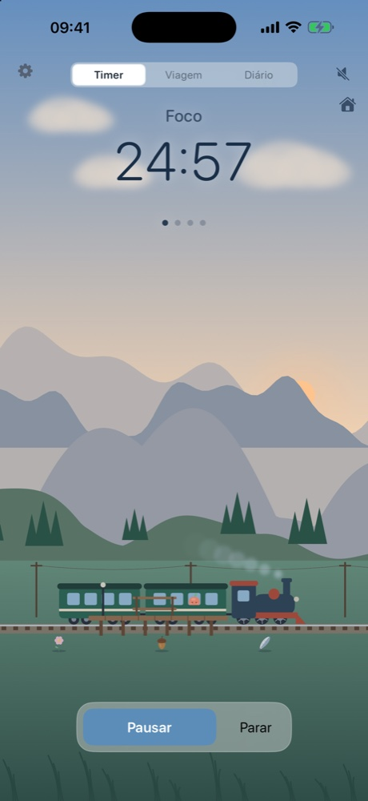
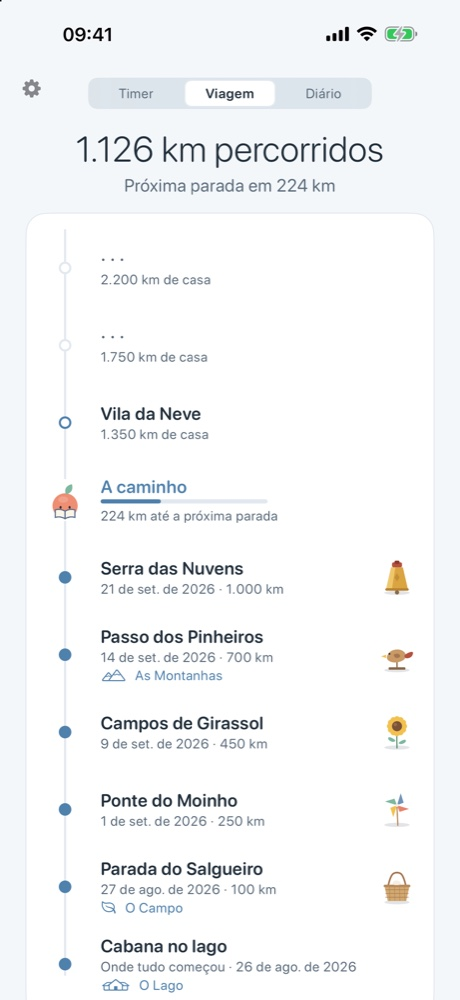
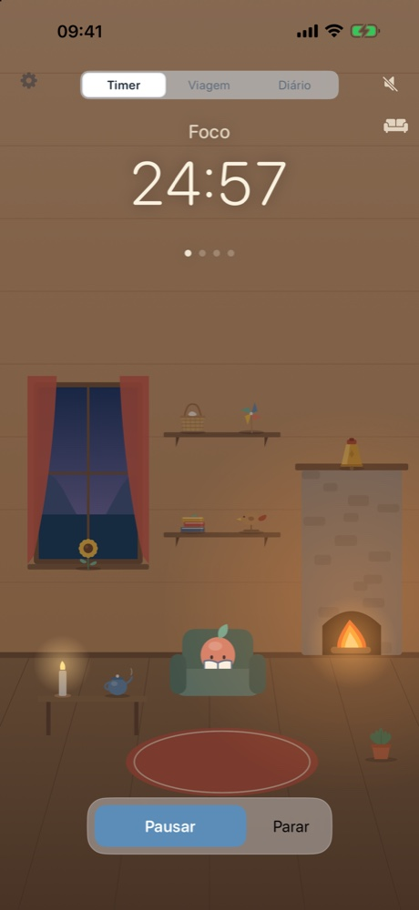
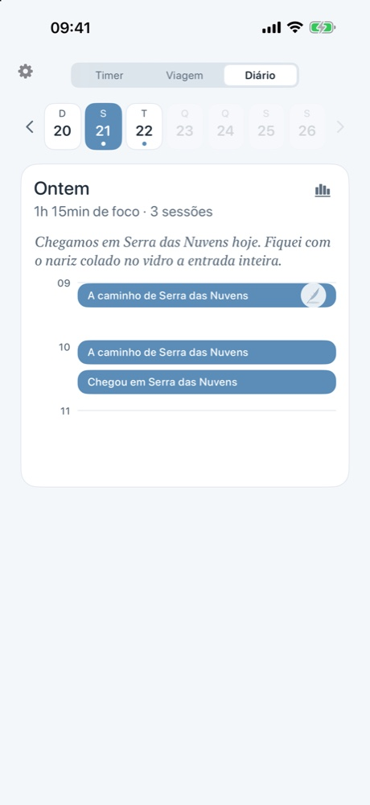
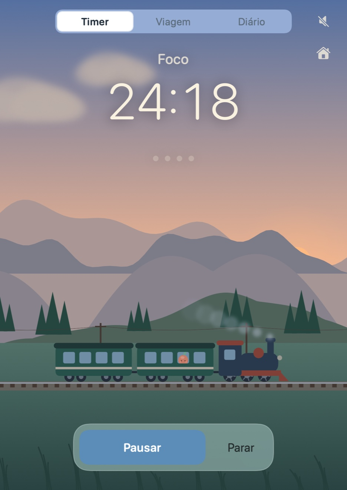
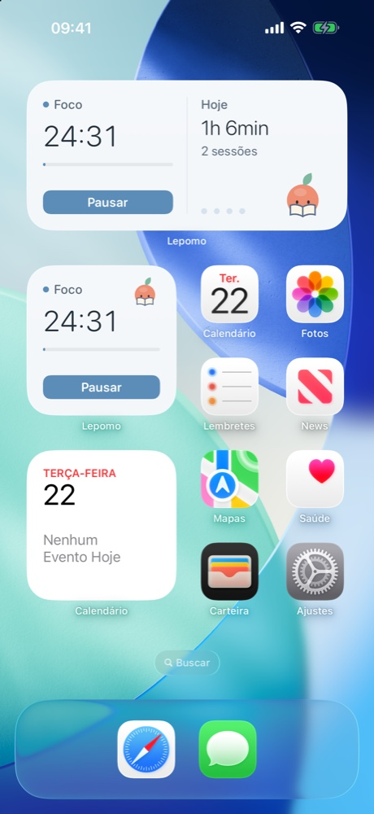
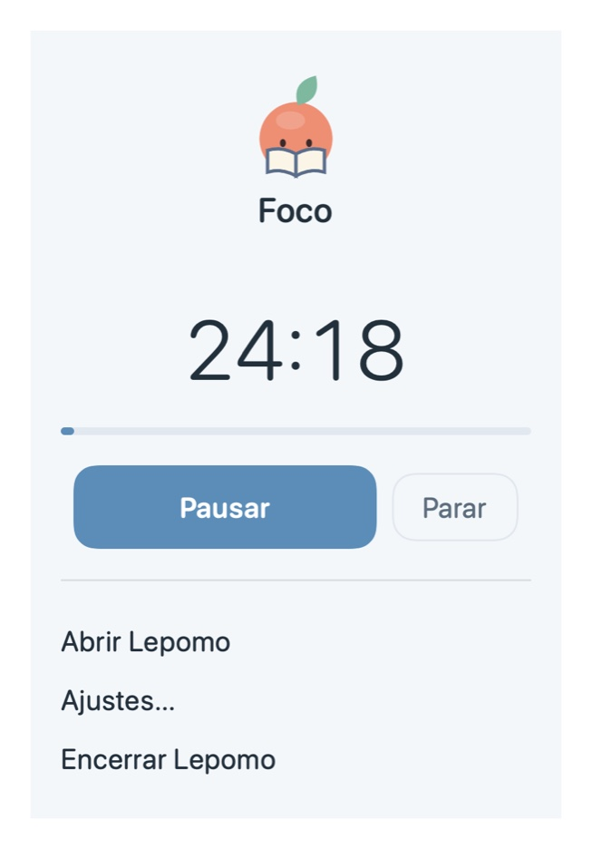

O timer
Um timer claro, um cenário vivo.
Foco, pausa curta, pausa longa. Pause e retome sem perder o ponto. O céu acompanha a sua hora do dia, chove de vez em quando, e o som ambiente foi feito para concentrar: o lago, uma brisa, grilos à noite, a lareira dentro de casa.

A viagem
Cada minuto move o trem.
Cada minuto de foco é um quilômetro. As estações chegam, cada uma com um cartão-postal e um souvenir. Pequenos achados aparecem pelo caminho. Tire uma semana de folga e o trem simplesmente espera: sem sequências, sem culpa, nada se desfaz.

A cabana
Uma cabana só sua.
Casa é uma cabana à beira do lago, com lareira, poltrona e prateleiras para o que a viagem traz de volta. Decore com os seus souvenirs, acrescente enfeites, mude o visual.

O diário
Um diário, não um placar.
Cada dia numa página: quando você focou, para onde o trem ia, o que encontrou, e uma linha escrita pelo próprio Lepomo sobre a coisa mais interessante que ele viu naquele dia. Os números ficam a um toque, para quem quiser.
Sempre à mão
A um olhar de distância.
No Mac ele mora na barra de menus, com widgets na mesa. No iPhone: Atividade ao Vivo na Tela Bloqueada e na Dynamic Island, widgets na Tela de Início e na Tela Bloqueada. Atalhos nos dois. Seu histórico e suas preferências acompanham você entre os aparelhos pelo seu próprio iCloud.



Privado por padrão
Nada sai dos seus aparelhos.
Sem conta, sem analytics, sem rastreamento. Seu histórico fica no seu iPhone e no seu Mac e, se você usa o iCloud, no seu iCloud privado, onde nós não conseguimos ver. O timer funciona totalmente offline.
Disponível para iPhone e Mac.